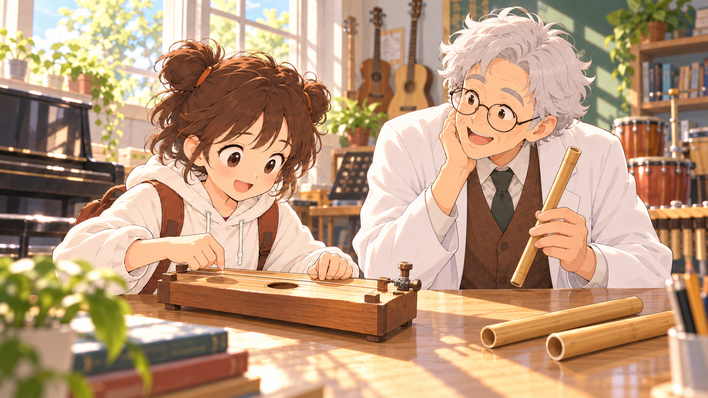

波動與聲音・單元3.3・第二輪
從演奏與聆聽開始：五張新候選
最新第三輪：查看C01～C05：涵蓋更多學習道具與情境。本頁保留第二輪供對照。
這一輪以人物發聲、聆聽和比較聲音為重點，移除波形平板、控制台與資料卡。琴弦和管子是故事裡會發聲的器材，接著再走進各學習區塊比較大小聲、高低音與音色。
新候選編號為B01～B05。點擊圖片可開啟原圖；目前正式課程首頁尚未採用任何候選。


從這個故事，怎麼走到七個學習區塊？
| 學習內容 | 由故事接續的問題 | 下方的學習操作 |
|---|---|---|
| ① 響度與振幅 | 同一個聲音，為什麼有時大聲、有時小聲？ | 固定頻率，比較振幅與大小聲。 |
| ② 音調與頻率 | 聲音變高，是振動得更快嗎？ | 比較頻率、振動次數與音調。 |
| ③ 琴弦的音調 | 同一條琴弦，怎麼彈出不同高低的聲音？ | 以簡化琴弦裝置，一次改變有效弦長或張力。 |
| ④ 空氣柱的音調 | 長管和短管，吹起來會一樣嗎？ | 以同類開口管，比較有效空氣柱長短與音調。 |
| ⑤ 音色與波形 | 音高相近時，為什麼仍能聽出不同聲源？ | 比較同音高的音色與波形；精確圖形在本區觀察。 |
| ⑥ 聽覺範圍 | 只要有振動，我們就都聽得到嗎？ | 延伸到人耳可聽範圍、動物高頻聽覺與超聲波。 |
| ⑦ 分貝的辨讀 | 除了說大聲、小聲，還能怎麼描述？ | 認識聲級資料與比較條件。 |
| 結尾小測 | 能幫聲音展示台調出指定的聲音嗎？ | 整合頻率、振幅與音色的設定。 |
首頁先呈現一個自然的聲音故事；聽覺範圍與分貝由後續提問延伸。B04以烏克麗麗與竹笛帶入音色，弦長與空氣柱的變因比較，仍使用③④區的簡化裝置。